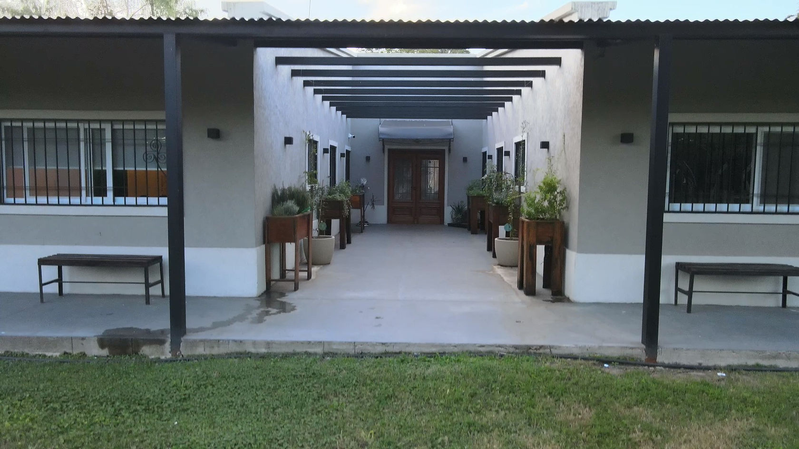
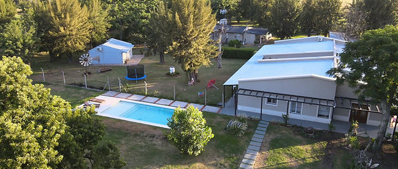
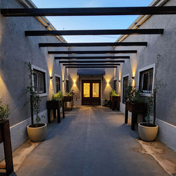
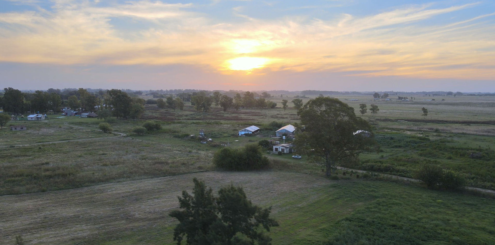
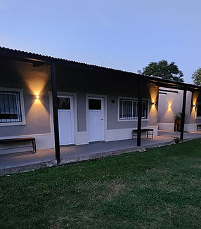
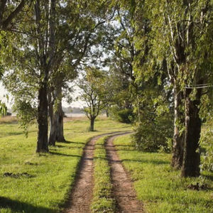
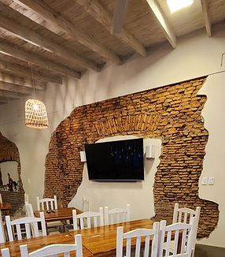
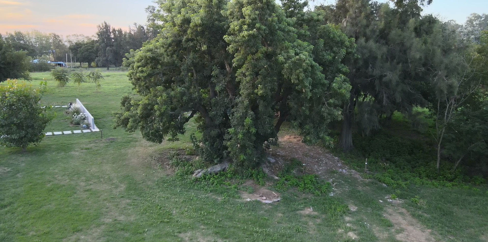

Un refugio en el campo tradicional argentino para descansar del ruido de la ciudad.
Finca Las Acacias es un refugio de campo pensado para desconectar. Quedate en una de nuestras cabañas para descansar del ruido de la ciudad y disfrutar de la tranquilidad, el verde y los atardeceres abiertos del campo bonaerense.
Estamos alejados del bullicio de la capital, pero cerca de los negocios locales y con la naturaleza a unos pasos. Un lugar para venir en familia, en pareja o con amigos y reconectar con lo simple.

Cada una de nuestras 5 cabañas está totalmente equipada para que solo te ocupes de descansar.
Cama matrimonial en habitación privada.
Sala con 3 sofá cama y cocina integrada.
Baño completo en cada cabaña.
Internet libre con fibra óptica.
Televisor LED en cada habitación.
Calefacción y aire acondicionado.
Acceso libre a todo el predio y el parque.
Lugar para tu vehículo dentro de la finca.
Pileta para disfrutar los días de calor.
Espacio común para encuentros y eventos.
Hasta 5 personas · totalmente equipadas
Cabañas cómodas y luminosas, con vista al parque y la tranquilidad del campo en cada rincón. Todas comparten el mismo equipamiento completo para que elijas la que prefieras.







Estamos ubicados en Marcos Paz, alejados del ruido de la capital pero cerca de los negocios locales y con la naturaleza a unos pasos.
Completá el formulario y te respondemos por WhatsApp con disponibilidad y precios. También podés escribirnos directamente o reservar por las plataformas.
¿Tenés un hospedaje y querés un sitio así de cuidado? Mirá más referencias, precios y pedí el tuyo.
Ver referencias y precios